What I Saw
A new commercial dishwashing line with plenty of bottlenecks and no established approach to streamline the process. It was the first week this kitchen was put to use.
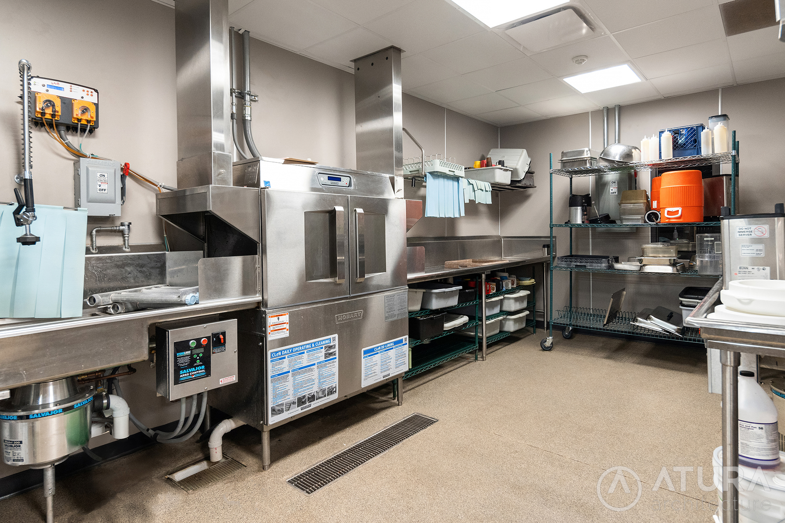
What I Thought
If we can make the dishwashing process faster, I can get out and enjoy more of camp's magic!
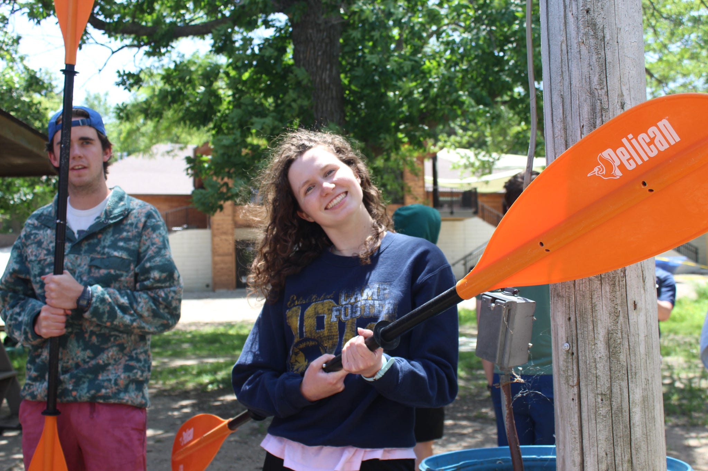
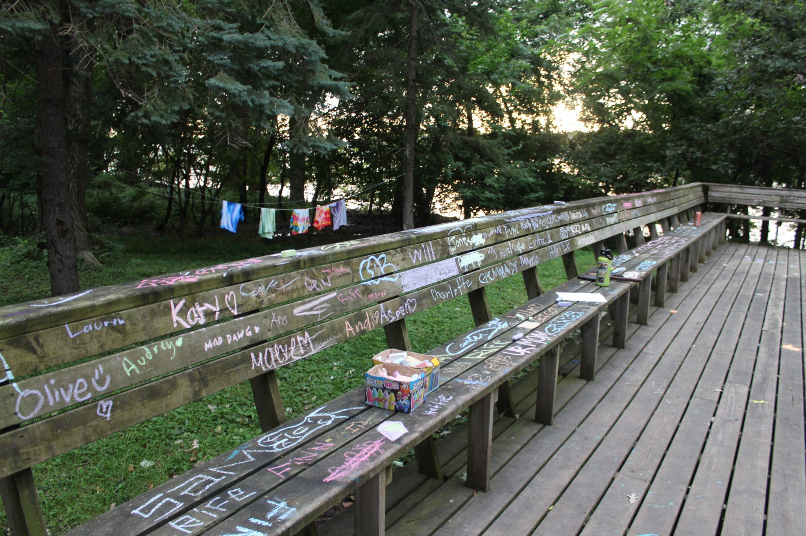
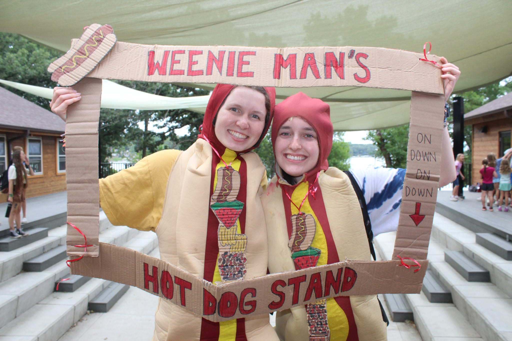
What I Did
- Identified bottlenecks throughout the newly implemented dishwashing line
- Recognized the strengths of my four teammates and specialized assigned tasks to enhance speed accordingly
- Introduced new methods, at least daily, to integrate into our existing best practices including optimized dish locations, movement patterns, and removal strategies
- Recorded time to completion for each meal, tracking our progress throughout the week
- Recruited my teammates to invest in this improvement process and compete against ourselves, increasing morale and excitement surrounding a typically mundane task
- Led a new set of teammates by providing insights from the previous week, anticipating novice issues, and adjusting techniques to better accomodate the new group dynamic
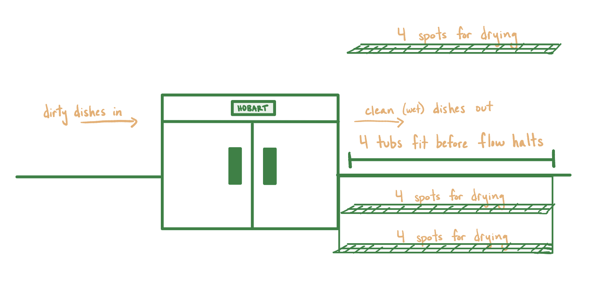
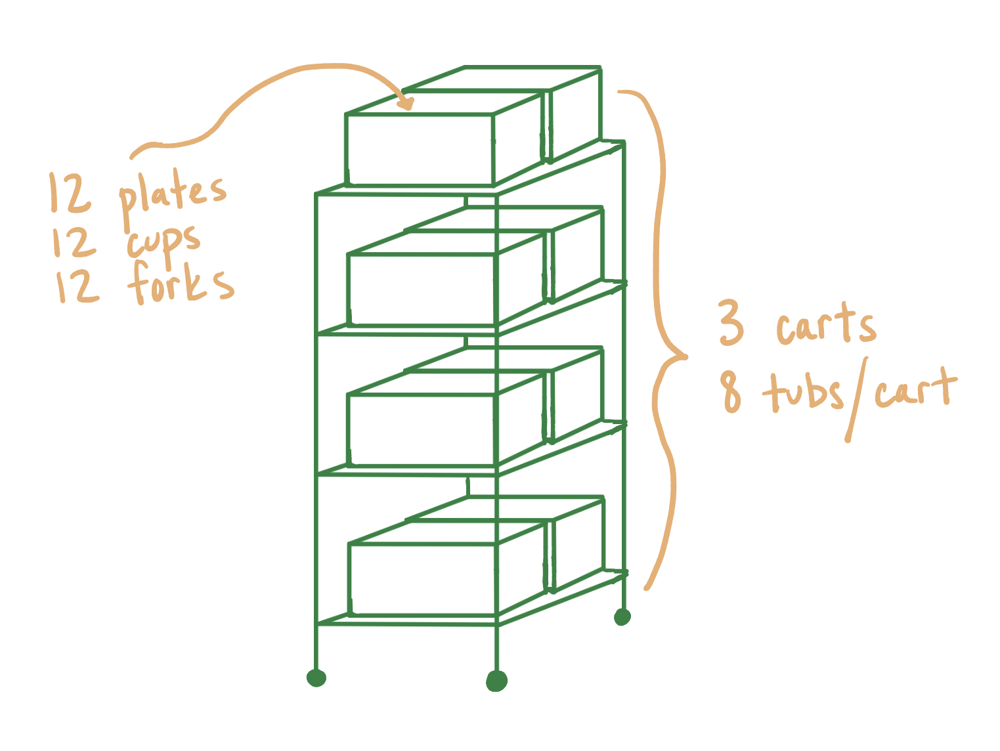
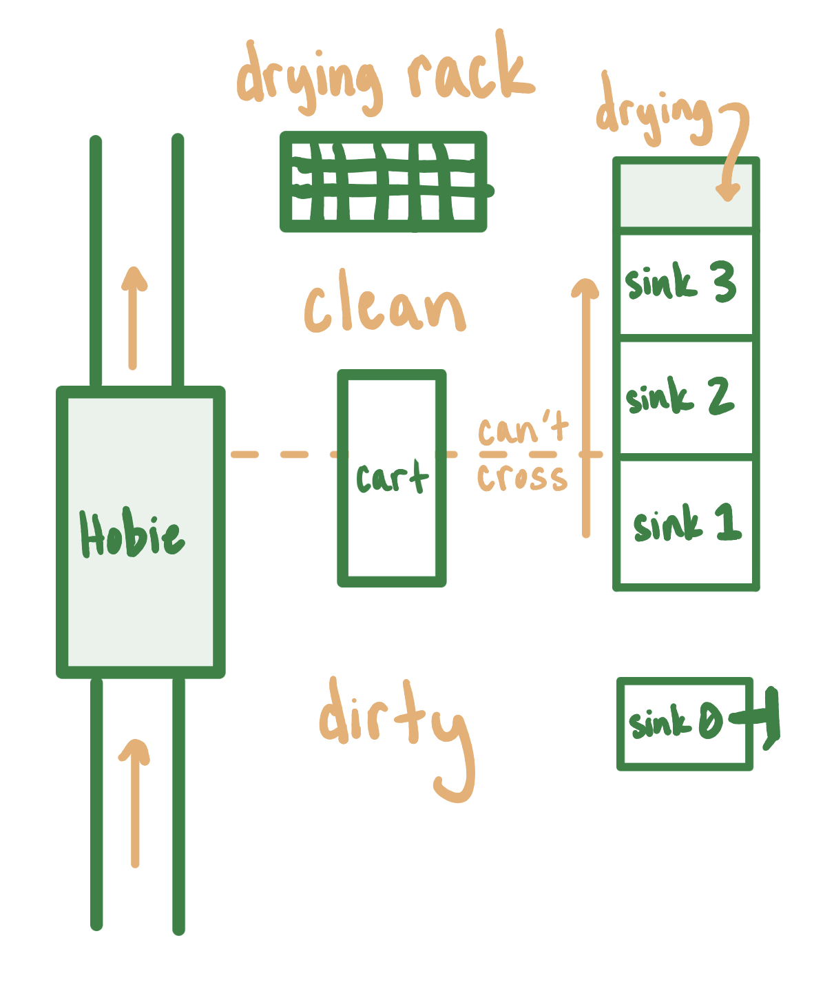
What I Created
By the end of week one, me and my fellow Dish Dawgs had reduced our total dishwashing time by over 50%! We had overcome the learning curve of an entirely new system and implemented new practices that became standard to save time. The next summer as a counselor, I watched as strategies I had suggested in real time the previous summer were still being used by individuals in the Dawg Pound. These time-saving processes allowed me to more deeply connect with staff and campers by opening up time to engage outside of the kitchen.
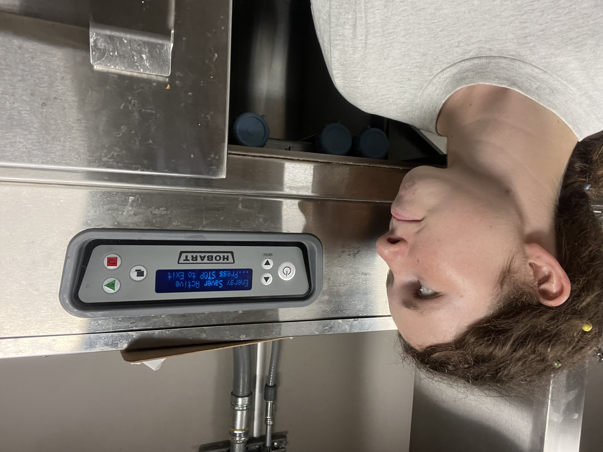
Why Include This?
I signed up to wash dishes for two weeks; I never thought I would include this in any sort of resume. Yet, this experience is without a doubt evidence that I can't escape a process improvement mindset.
Whatever is put in front of me I will try to optimize -- even something as simple as a dishwashing line. I tried putting the cups here, putting the plates there, loading the tubs this way and that, and I was enthralled by it all.
I talked myself through new ideas out loud to reason out their potential benefits and issues. My iterations some days were minute, but they were always present. I love finding ways to make the places I'm in better, even when I'm doing dishes!
.jpeg)
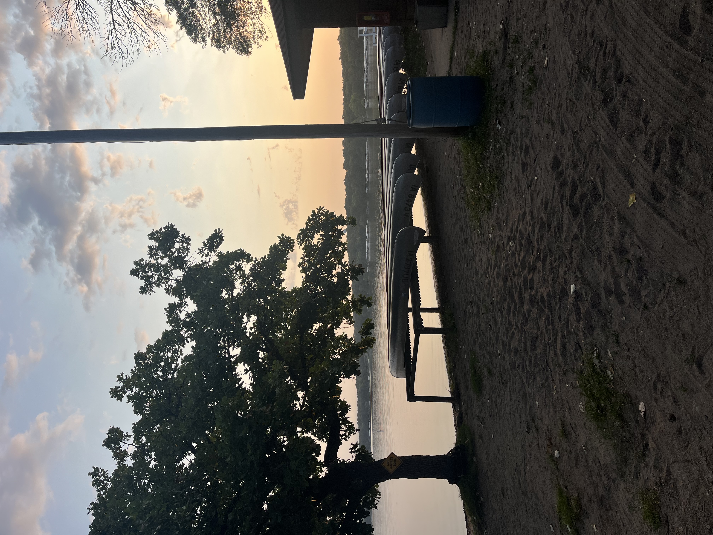
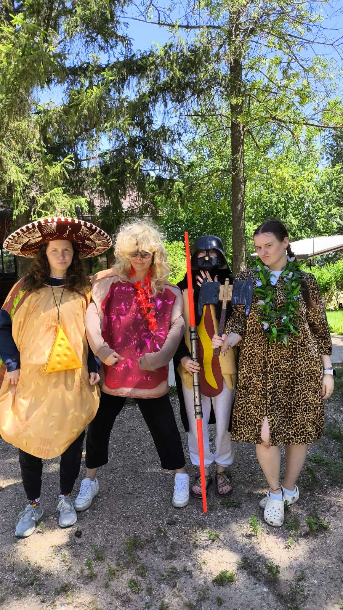
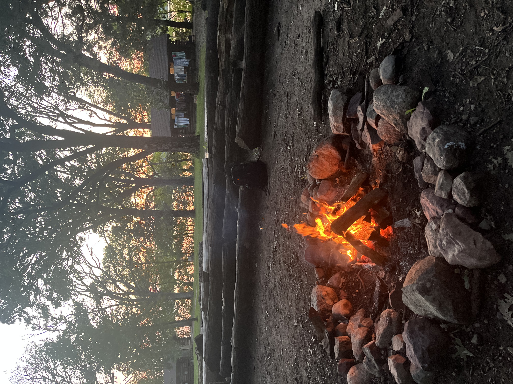